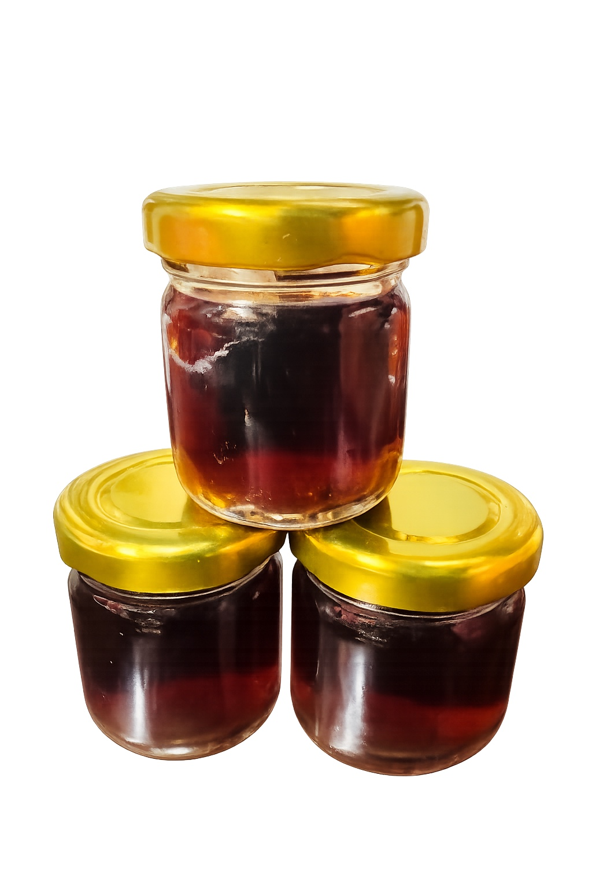

延續傳統熬製工序 回到日常補養文化
以食用方式、型態選擇與料理搭配為主，整理成更清楚的日常路徑。
從膏、飲、湯塊、粉末到調飲粉，快速找到適合自己的使用方式。
依產品型態與規格整理，點選卡片可直接查看完整詳細介紹。
從日常燉湯、雞湯到飲品搭配，整理成更直覺的內容頁。
提示：點產品卡片可直接查看完整詳細介紹。
傳統熬製濃縮

30cc / 180cc 即飲
75g / 300g / 600g
日常補養
可加入茶或咖啡
可先看龜鹿膏與龜鹿飲，依照日常作息與攜帶需求做選擇。
可先看龜鹿湯塊，適合加入雞湯、排骨湯或其他燉湯料理。
可看鹿茸粉與柒玄茶・龜鹿調飲粉，依照個人習慣搭配溫熱飲品。
可先進入食用指南與 FAQ，再決定較適合自己的產品型態。